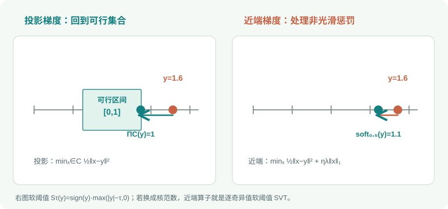
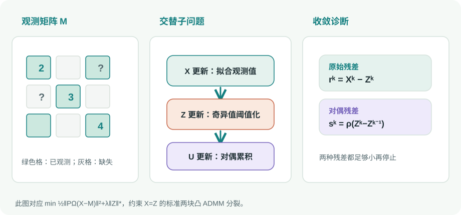

01 / 矩阵优化的统一模型：光滑项、非光滑项与约束
许多矩阵学习问题都可写成 min_X f(X)+g(X)：f 是可微的数据拟合损失，g 则编码稀疏、低秩或其他结构先验。若把约束集合 C 作为指示函数加入 g，投影梯度、近端梯度与 ADMM 就成为同一复合优化框架的不同分裂方式。
这里的矩阵内积采用 Frobenius 约定，梯度与 X 同形。若 f 的梯度满足 L-Lipschitz 条件，即 ‖∇f(X)−∇f(Y)‖F≤L‖X−Y‖F，步长可由 L 控制。矩阵规模大并不自动意味着需要按维度归一化梯度；步长取决于目标函数曲率、变量尺度和所选范数。
当 g 是集合 C 的指示函数（在 C 内为 0、外部为 +∞）时，问题等价于在 C 上最小化 f。若 g 是 L1 或核范数，最优解可能存在大量精确零元素或低秩结构，而普通梯度步通常不会直接产生这些结构。
02 / 投影梯度：把可行性约束放回每一步
对于非空闭凸集合 C，投影算子返回与 Y Frobenius 距离最近的可行矩阵。投影梯度先走一个负梯度步，再投影回 C。若 f 凸且梯度 L-Lipschitz，取常数步长 0<η≤1/L，可得到标准凸优化收敛保证；若 C 非凸（例如 rank≤r 集合或 Stiefel 流形），最近点可能不唯一，也不能据此宣称全局最优。
| 集合 C | Frobenius 投影 | 凸性 |
|---|---|---|
| 范数球 ‖X‖F≤r | 按半径缩放 | 凸 |
| PSD 锥 X⪰0 | 对称化后截断负特征值 | 凸 |
| 逐元素非负 | max(X,0) | 凸 |
| rank(X)≤r | 截断 SVD | 非凸 |
| Stiefel：XᵀX=I | 极分解/最近正交因子 | 非凸 |
注意：若矩阵不对称，投影到 PSD 锥应先取对称部分 (Y+Yᵀ)/2，再对称特征分解并将负特征值截为零。把一个任意矩阵的“负特征值”直接截断并不能定义标准的 PSD 投影。
03 / 近端梯度：让非光滑正则项拥有闭式更新
近端算子将梯度步与结构惩罚合并：对 f+g，先对光滑项 f 做梯度步，再求离当前点最近、同时兼顾 g 惩罚的矩阵。若 g=λ‖X‖₁，近端算子是逐元素软阈值；若 g=λ‖X‖*，则对奇异值逐个软阈值，奇异向量保持不变。
FISTA 在满足凸性与光滑性假设时，用外推点加速近端梯度，目标函数值可达到 O(1/k²) 的标准速率。加速序列可能出现目标函数短暂上升；单调 FISTA 或回溯线搜索可用于更稳健的实现。不要把加速版本的速率无条件套到非凸目标上。

04 / ADMM：用变量分裂拆开数据拟合与低秩惩罚
考虑带噪矩阵补全问题：观测集合 Ω 中有数据 M，未观测位置未知。以核范数作为低秩凸代理，目标是 ½‖PΩ(X−M)‖F²+λ‖X‖*。引入 Z 并约束 X=Z，便可将观测拟合与核范数近端分到两个子问题中。
scaled ADMM 的 X 更新在 Ω 上是一个标量二次问题，在 Ω 外只受一致性罚项约束；Z 更新就是核范数近端，U 是缩放对偶变量。
若采用单位一致性约束，原始残差为 rᵏ=Xᵏ−Zᵏ，对偶残差为 sᵏ=ρ(Zᵏ−Zᵏ⁻¹)。停止条件要同时检查两者及相应绝对/相对容差。只看目标函数下降或只看原始残差都可能误判尚未满足 KKT 条件。

05 / 矩阵补全：低秩先验为什么仍需要采样假设？
矩阵补全不只是“把缺失格子填上”。当 Ω 太小或观测位置过于集中时，可能存在许多低秩矩阵都与已观测条目一致。经典恢复理论通常要求数据矩阵具有一定的非相干性，并且观测位置满足随机采样等条件；核范数最小化在这些假设下才可能精确或稳定恢复。
若观测含噪，使用平方损失是自然选择；若观测是计数或有不同统计噪声模型，可换成适合的似然或加权损失。若将 X 分解为 UVᵀ 以降低计算成本，变量变少但优化目标变为非凸，初始化和局部极小值会进入分析。
06 / 复算：奇异值阈值化与 ADMM 的一致性更新
import math
def svt_diagonal(sigmas, tau):
return [max(s-tau, 0.0) for s in sigmas]
s = svt_diagonal([5.0, 2.0, 0.5], 1.25)
assert s == [3.75, 0.75, 0.0]
assert sum(v > 0 for v in s) == 2
assert all(v >= 0 for v in s)
# One ADMM X-update for a single observed scalar:
# minimize .5*(x-m)^2 + rho/2*(x-z+u)^2
m, z, u, rho = 3.0, 1.0, 0.2, 2.0
x = (m + rho*(z-u))/(1+rho)
assert abs(x - 1.5333333333333332) < 1e-12
# An unobserved entry has no data-fit term.
x_missing = z-u
assert abs(x_missing-.8) < 1e-12
print("SVT singular values:",s,"observed X update:",x)预期阈值化后奇异值为 [3.75, 0.75, 0]，输出秩为 2。单个观测格子的 X 更新为 1.5333；缺失格子只执行一致性更新，得到 0.8。
参考资料与进一步阅读
- Boyd et al. (2011), Distributed Optimization and Statistical Learning via ADMM
- Cai, Candès & Shen (2010), A Singular Value Thresholding Algorithm for Matrix Completion
- Beck & Teboulle (2009), A Fast Iterative Shrinkage-Thresholding Algorithm for Linear Inverse Problems
- Cambridge Topics in Convex Optimisation：梯度法与 L-smooth 条件
数值示例只验证所给输入下的代数关系；它们不构成对任意数据集的全局收敛或恢复保证。